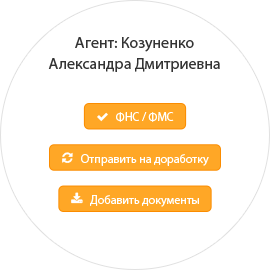
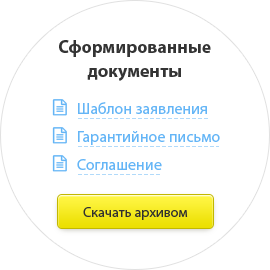
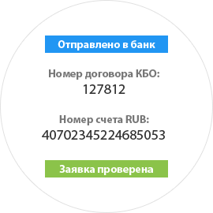
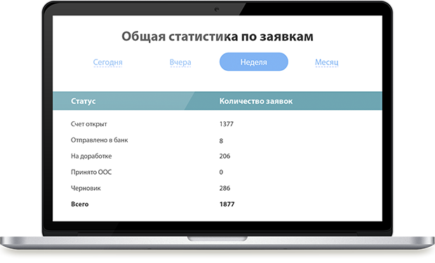

Скачать кейс
PDF (2,2 Мб)
Над проектом работали:
ведущий программист
Дмитрий Никитин
старший дизайнер
Павел Кулигин
дизайнер
Юлия Волкова
проектировщик
Светлана Карпова
программист
Александр Володин
технолог
Сергей Светлаков
менеджер
Владимир Смирнов
Задача
Перед специалистами Bedoit была поставлена задача
разработать сервис облегчающий работу по сбору,
систематизации и передачи данных потенциальных клиентов
юр. лиц на предварительный анализ, проверку и
автоматизацию резервации и открытия счета в Банке.
Данное решение должно было решать целый спектр задач:
Автоматизировать сбор первичной документации и информации о клиенте.
Осуществлять автоматическое заполнение полей анкеты по связанным параметрам.
Формировать готовые документы, используя заложенные
шаблоны и логики (правила) заполнения этих документов
при вводе данных клиента.
Возможность прикрепления сканов документов и
обеспечение доступа к этой информации подразделениям
бек-офиса Банка.
Осуществлять обратную связь между агентом и бек-офисом,
для оперативного устранения ошибок и недочетов
допущенных при предоставлении документации и данных.
Интеграция с внутренней системой банка,
получение информации из анкет и корректного ее
попадания в системы банка, автоматизация процесса
резервирования и открытия счета, через внешний
интерфейс при соответствии внутрибанковским
правилам и условиям осуществления данных операций.
Систему споп-факторов, автоматически отсеивающих
недобросовестных клиентов, намеренно предоставляющих
недостоверные данные и оповещающих службы безопасности
Банка о подобных случаях, с блокировкой дальнейшего
процесса оформления.
Защита персональных и иных данных потенциального
клиента.
Решение
Первоначально был осуществлен масштабный сбор
информации о том, какие процессы осуществляют
все участники процесса для успешного оформления
клиента, какие проблемы возникают на каждом участке,
в каких участках процесса необходим наиболее
тщательный контроль и система защиты от ошибок
и человеческого фактора.
Ключевые участники
Затем были выявлены все ключевые участки,
которые требуют наибольших затрат времени
на ручной ввод и обработку информации
(заполнения анкет, адресов, повторный ввод
однотипных данных для различных форм документов
и т.д.). Все эти участки требовали максимальной
автоматизации за счет применения связанных логик
и построения механизмов соответствия правилам
оформления документации.
Автозаполнение анкеты
Было подобрано решение, позволяющее предзаполнение
максимально возможного количества ключевых полей
анкеты по однозначно определяющим параметрам
(ИНН юридического лица), за счет обращения к
сторонним сертифицированным базам данных юридических
лиц. Осуществлена интеграция этого решения в
структуру Личного кабинета.
Обработка информации
Выявлен весь пул информации, необходимой для
резервирования и открытия счета во внутренней
системе банка, минуя ручной ввод данных.
Произведена поэтапная интеграция с внутренними
системами банка с постепенно увеличивающимся
объемом передаваемой информации (от необходимого
минимума, до максимально полной передачи всей
требуемой информации из Личного кабинета Агента
в систему Банка).


Создание шаблонов
Запрограммированы шаблоны и логики заполнения
шаблонов, полностью соответствующие всем правилам,
предусмотренным как в Банке, так и всецело отвечающим
требованиям регулятора в работе со стандартизированной
документацией.
Разработка документооборорта
Разработана и внедрена система внутреннего
документооборота для бек-офиса банка,
включающая в себя системы оценки качества
предоставляемой агентом документации,
проверки полноты предоставляемых документов
(в электронном виде), сбора статистической
информации для оценки качества работы всех
подразделений отвечающих за процесс (скорость
обработки заявок, подсчет количества итераций
между агентом и бек-офисом, соответствие данных
параметров внутренним ограничением, правилам и
стандартам

Система разграничения прав доступа
Разработана и внедрена система разграничения
прав и доступов пользователей, как к личному
кабинету, так и к его изнанке – системе
документооборота. Благодаря этой системе
появилась возможность осуществлять полный
контроль над процессами руководителями
ответственными за прием и обработку заявок
подразделений. Введена личная ответственность
и возможность оценки эффективности работы
каждого сотрудника, принимающего участие в
бизнес процессе. Зоны «потерянного контроля»,
узлы в которых возникали ошибки, и, впоследствии,
происходили профессиональные конфликты между
подразделениями Банка, были последовательно
ликвидированы.
Система сбора статистики
Разработана и внедрена автоматизированная система
сбора и предоставления статистики, позволяющая
руководителям моментально получать доступ к
любому срезу информации, соответствующему их
уровню доступа. Реализована выгрузка статистики
в средства Microsoft Office.

Результат
В совокупности этих решений и разработок была
получена система полного цикла, позволяющая
практически полностью автоматизировать процессы
получения, обработки оценки и использования
данных клиента для максимального быстрого и
качественного открытия счета в банке для клиентов
юр.лиц.
Система экономила 70% того времени, которое
ранее затрачивалось на ручную обработку
информации и взаимодействие между структурами
банка участвующими в процессе. Более чем на 80%
было сокращено количество ошибок, возникающих
из-за человеческого фактора. «Чистое время»
обработки заявки на открытие счета от момента
попадания систему, до получения клиентом счета
сократилось в N раз.
Личный кабинет агента был успешно интегрирован
в общий бизнес-процесс открытия счетов для
клиентов юр. лиц Банка в качестве одного из
ключевых модулей масштабной автоматизации
данного процесса.
Экономические показатели работы системы
«Личный кабинет агента»
Экономия времени на обработку данных до 70%
Сокращение ошибок при обработке данных на 80%
Сокращение времени обработки заявки
на открытие счета в 6 раз